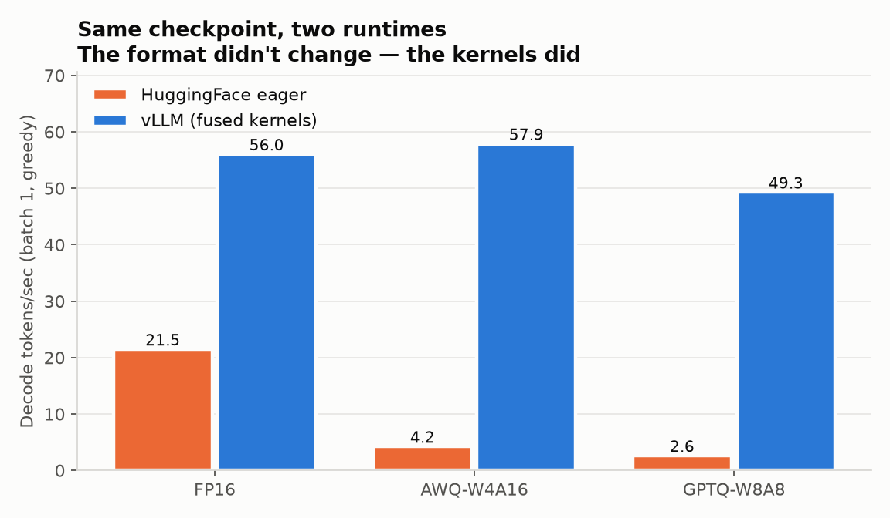

The plan, and the first head-to-head: MoE vs Diff-MoE
Build log, post 1 of 3. What this project is trying to find out, how it is set up so the answer means something, and the first real result.
ML engineer at Ubisoft India R&D, making LLM and VLM serving measurable.
{
"role": "ML Engineer",
"at": "Ubisoft India, R&D",
"focus": ["LLM", "VLM", "agents"],
"gpus": ["4090", "MI300X", "3060"],
"quant": "W4A16 | W8A16 | AWQ | FP8",
"tuning": "SFT | LoRA | DPO | GRPO",
"status": "shipping"
}
Open one for its scope, a plain-English README, the numbers it produced and its write-ups.
Each dossier you open is ticked off here.
Also public: PatchHawk (GRPO in a Docker sandbox), ArxivSage, LEANN, parameter-golf, simple_yolo_detr, FineTuning-LLMs, XF-ocr.
See all 30 repos on GitHubOne AWQ-W4A16 checkpoint on an RTX 3060: 4.3 tok/s in HF eager, 57.9 under vLLM.

Years building production AI: agentic workflows, LLM and VLM serving, retrieval, backend infrastructure.
Mistral AI Worldwide Hackathon 2026, online track.
No. 202441102999, filed Dec 2024: voice authentication with simultaneous intent and entity classification.
ICCCNT 2024, IIT Mandi: an Appearance-Trajectory Network for unsupervised video anomaly detection, with captioning for explainability. 82% / 84.9% AUC.
Edge silicon at Bosch, production GPUs at Ninestars, a C++ engine at Ubisoft. The job stays: profile it, shrink it, ship it.
Game AI and QC: vision-language models inside a C++ engine.
R&D: the OCR pipeline, and the GPUs it runs on.
HMI: eleven months from research to NXP edge silicon.
Five published on Medium, fourteen more mapped across ten repos.
Build log, post 1 of 3. What this project is trying to find out, how it is set up so the answer means something, and the first real result.

Continuation of the post-mortem: same model, same bug family, one new twist. This time the fix existed in the codebase; it just was not in the config the job ran with.

A finetuning post-mortem, or: how a dashboard lied to me for three epochs.

How we LoRA-tuned NVIDIA’s Nemotron-3-Nano-30B-A3B for a deterministic-reasoning benchmark, and the three submission-killing bugs nobody warns you about.
The strategy we walked in with, the wall we hit at 0.85, every regression we earned, and what we would do differently.
| Languages | Python, C++, C#, SQL |
|---|---|
| Inference | vLLM, AWQ, GPTQ, SmoothQuant, FP8, KV-cache optimization, continuous batching, ONNX, TensorRT, TFLite |
| Post-training | SFT, LoRA, QLoRA, DPO, PPO, GRPO, DFT loss, FSDP, Accelerate DDP |
| Agentic | Google ADK, MCP, A2A, ReAct, self-reflection, hierarchical delegation, hybrid RAG |
| Backend | FastAPI, gRPC, PostgreSQL, Redis, Docker, Kubernetes, AWS, Linux, CI/CD |
| Observability | Weights & Biases, MLflow, Langfuse, Prometheus, Grafana, TTFT, TPOT, tokens/sec |
| Hardware | RTX 4090, RTX 3060, AMD Instinct MI300X, Kaggle 2×T4, NXP edge (Android) |